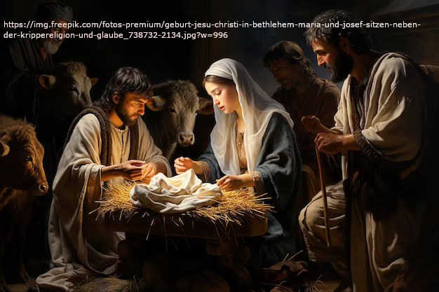
Birth of Jesus
Now when Jesus was born in Bethlehem of Judea in the days of King Herod, behold, wise men [The word for “wise men” (magoi) can also mean teachers, scientists, physicians, astrologers, seers, interpreters of dreams, or sorcerers.] from the east came to Jerusalem, saying,“Where is he who is born King of the Jews? For we saw his star in the east, and have come to worship him.”When King Herod heard it, he was troubled, and all Jerusalem with him.Gathering together all the chief priests and scribes of the people, he asked them where the Christ would be born.They said to him, “In Bethlehem of Judea, for this is written through the prophet,‘You Bethlehem, land of Judah, are in no way least among the princes of Judah: for out of you shall come a governor, who shall shepherd my people, Israel.’” Then Herod secretly called the wise men, and learned from them exactly what time the star appeared.He sent them to Bethlehem, and said, “Go and search diligently for the young child. When you have found him, bring me word, so that I also may come and worship him.” They, having heard the king, went their way; and behold, the star, which they saw in the east, went before them, until it came and stood over where the young child was.When they saw the star, they rejoiced with exceedingly great joy.They came into the house and saw the young child with Mary, his mother, and they fell down and worshiped him. Opening their treasures, they offered to him gifts: gold, frankincense, and myrrh.Being warned in a dream that they shouldn’t return to Herod, they went back to their own country another way.(Matthew 2:1-12 WEB)
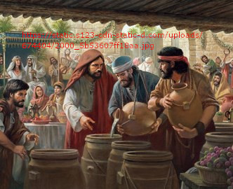
Water into Wine
The third day, there was a marriage in Cana of Galilee. Jesus’ mother was there.Jesus also was invited, with his disciples, to the marriage.When the wine ran out, Jesus’ mother said to him, “They have no wine.”Jesus said to her, “Woman, what does that have to do with you and me? My hour has not yet come.” His mother said to the servants, “Whatever he says to you, do it.”Now there were six water pots of stone set there after the Jews’ way of purifying, containing two or three metretes [2 to 3 metretes is about 20 to 30 U. S. Gallons, or 75 to 115 liters.] apiece.Jesus said to them, “Fill the water pots with water.” They filled them up to the brim.He said to them, “Now draw some out, and take it to the ruler of the feast.” So they took it.When the ruler of the feast tasted the water now become wine, and didn’t know where it came from (but the servants who had drawn the water knew), the ruler of the feast called the bridegroom,and said to him, “Everyone serves the good wine first, and when the guests have drunk freely, then that which is worse. You have kept the good wine until now!”This beginning of his signs Jesus did in Cana of Galilee, and revealed his glory; and his disciples believed in him.After this, he went down to Capernaum, he, and his mother, his brothers, and his disciples; and they stayed there a few days.(John 2:1-12 WEB)
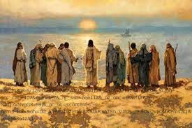
Choose Twelve Disciples
He went up into the mountain, and called to himself those whom he wanted, and they went to him.He appointed twelve, that they might be with him, and that he might send them out to preach,and to have authority to heal sicknesses and to cast out demons:Simon (to whom he gave the name Peter);James the son of Zebedee; and John, the brother of James, (whom he called Boanerges, which means, Sons of Thunder);Andrew; Philip; Bartholomew; Matthew; Thomas; James, the son of Alphaeus; Thaddaeus; Simon the Zealot;and Judas Iscariot, who also betrayed him. Then he came into a house.(Mark 3:13-19 WEB)
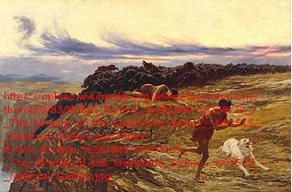
Exorcism in Gerasenes
They arrived at the country of the Gadarenes, which is opposite Galilee.When Jesus stepped ashore, a certain man out of the city who had demons for a long time met him. He wore no clothes, and didn’t live in a house, but in the tombs.When he saw Jesus, he cried out, and fell down before him, and with a loud voice said, “What do I have to do with you, Jesus, you Son of the Most High God? I beg you, don’t torment me!”For Jesus was commanding the unclean spirit to come out of the man. For the unclean spirit had often seized the man. He was kept under guard, and bound with chains and fetters. Breaking the bonds apart, he was driven by the demon into the desert.Jesus asked him, “What is your name?” He said, “Legion,” for many demons had entered into him.They begged him that he would not command them to go into the abyss.Now there was there a herd of many pigs feeding on the mountain, and they begged him that he would allow them to enter into those. He allowed them.The demons came out of the man, and entered into the pigs, and the herd rushed down the steep bank into the lake, and were drowned.When those who fed them saw what had happened, they fled, and told it in the city and in the country.People went out to see what had happened. They came to Jesus, and found the man from whom the demons had gone out, sitting at Jesus’ feet, clothed and in his right mind; and they were afraid.Those who saw it told them how he who had been possessed by demons was healed.All the people of the surrounding country of the Gadarenes asked him to depart from them, for they were very much afraid. He entered into the boat, and returned.But the man from whom the demons had gone out begged him that he might go with him, but Jesus sent him away, saying,“Return to your house, and declare what great things God has done for you.” He went his way, proclaiming throughout the whole city what great things Jesus had done for him.(Luke 8:26-39 WEB)
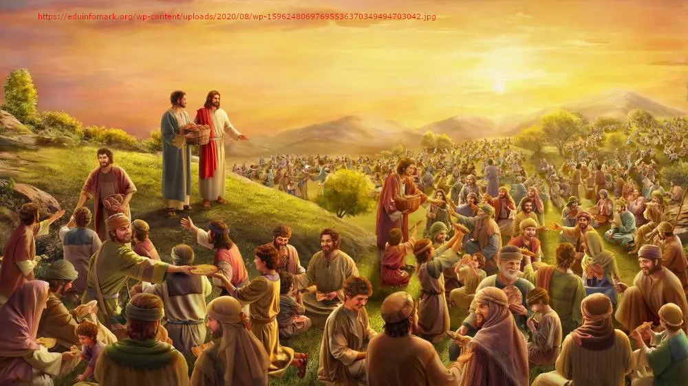
Five Loaves and Two Fish
Now when Jesus heard this, he withdrew from there in a boat, to a deserted place apart. When the multitudes heard it, they followed him on foot from the cities. Jesus went out, and he saw a great multitude. He had compassion on them, and healed their sick.When evening had come, his disciples came to him, saying, “This place is deserted, and the hour is already late. Send the multitudes away, that they may go into the villages, and buy themselves food.”But Jesus said to them, “They don’t need to go away. You give them something to eat.” They told him, “We only have here five loaves and two fish.”He said, “Bring them here to me.”He commanded the multitudes to sit down on the grass; and he took the five loaves and the two fish, and looking up to heaven, he blessed, broke and gave the loaves to the disciples, and the disciples gave to the multitudes.They all ate, and were filled. They took up twelve baskets full of that which remained left over from the broken pieces.Those who ate were about five thousand men, besides women and children.(Matthew 14:13-21 WEB)

Calm the Wind and Waves
When he got into a boat, his disciples followed him.Behold, a violent storm came up on the sea, so much that the boat was covered with the waves, but he was asleep.They came to him, and woke him up, saying, “Save us, Lord! We are dying!”He said to them, “Why are you fearful, O you of little faith?” Then he got up, rebuked the wind and the sea, and there was a great calm.The men marveled, saying, “What kind of man is this, that even the wind and the sea obey him?”(Matthew 8:23-27 WEB)
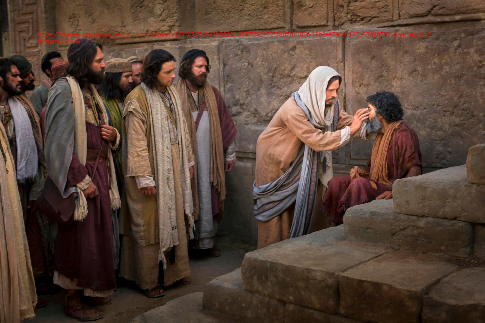
Healing a Blind
As he passed by, he saw a man blind from birth.His disciples asked him, “Rabbi, who sinned, this man or his parents, that he was born blind?”Jesus answered, “Neither did this man sin, nor his parents; but, that the works of God might be revealed in him. I must work the works of him who sent me, while it is day. The night is coming, when no one can work. While I am in the world, I am the light of the world.”When he had said this, he spat on the ground, made mud with the saliva, anointed the blind man’s eyes with the mud,and said to him, “Go, wash in the pool of Siloam” (which means “Sent”). So he went away, washed, and came back seeing.The neighbors therefore, and those who saw that he was blind before, said, “Isn’t this he who sat and begged?”Others were saying, “It is he.” Still others were saying, “He looks like him.” He said, “I am he.”They therefore were asking him, “How were your eyes opened?”He answered, “A man called Jesus made mud, anointed my eyes, and said to me, ‘Go to the pool of Siloam, and wash.’ So I went away and washed, and I received sight.”Then they asked him, “Where is he?” He said, “I don’t know.” (John 9:1-12 WEB)
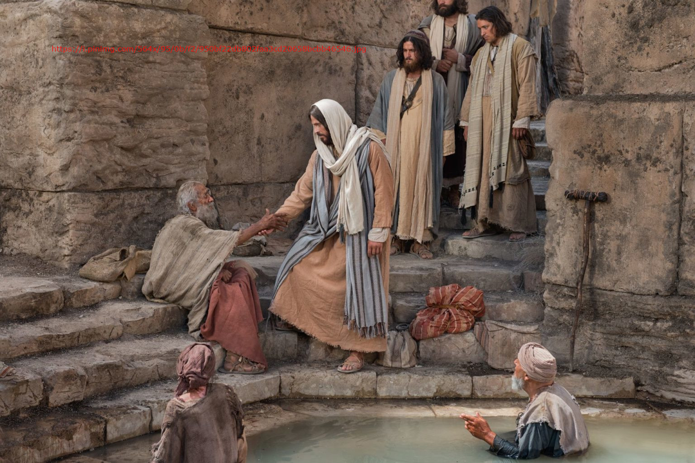
Healing a Lame
After these things, there was a feast of the Jews, and Jesus went up to Jerusalem.Now in Jerusalem by the sheep gate, there is a pool, which is called in Hebrew, “Bethesda”, having five porches.In these lay a great multitude of those who were sick, blind, lame, or paralyzed, waiting for the moving of the water;for an angel went down at certain times into the pool, and stirred up the water. Whoever stepped in first after the stirring of the water was healed of whatever disease he had. [NU omits from “waiting” in verse 3 to the end of verse 4.] A certain man was there, who had been sick for thirty-eight years.When Jesus saw him lying there, and knew that he had been sick for a long time, he asked him, “Do you want to be made well?” The sick man answered him, “Sir, I have no one to put me into the pool when the water is stirred up, but while I’m coming, another steps down before me.” Jesus said to him, “Arise, take up your mat, and walk.”Immediately, the man was made well, and took up his mat and walked. Now it was the Sabbath on that day.So the Jews said to him who was cured, “It is the Sabbath. It is not lawful for you to carry the mat.”He answered them, “He who made me well, the same said to me, ‘Take up your mat, and walk.’” Then they asked him, “Who is the man who said to you, ‘Take up your mat, and walk’?” But he who was healed didn’t know who it was, for Jesus had withdrawn, a crowd being in the place.Afterward Jesus found him in the temple, and said to him, “Behold, you are made well. Sin no more, so that nothing worse happens to you.” The man went away, and told the Jews that it was Jesus who had made him well.For this cause the Jews persecuted Jesus, and sought to kill him, because he did these things on the Sabbath.But Jesus answered them, “My Father is still working, so I am working, too.”For this cause therefore the Jews sought all the more to kill him, because he not only broke the Sabbath, but also called God his own Father, making himself equal with God.(John 5:1-18 WEB)
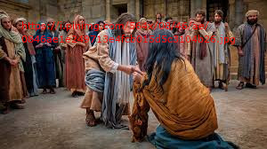
Women Caught in the Act of Prostitution
But Jesus went to the Mount of Olives.Now very early in the morning, he came again into the temple, and all the people came to him. He sat down, and taught them.The scribes and the Pharisees brought a woman taken in adultery. Having set her in the middle,they told him, “Teacher, we found this woman in adultery, in the very act.Now in our law, Moses commanded us to stone such women. What then do you say about her?”They said this testing him, that they might have something to accuse him of. But Jesus stooped down, and wrote on the ground with his finger.But when they continued asking him, he looked up and said to them, “He who is without sin among you, let him throw the first stone at her.” Again he stooped down, and with his finger wrote on the ground.They, when they heard it, being convicted by their conscience, went out one by one, beginning from the oldest, even to the last. Jesus was left alone with the woman where she was, in the middle.Jesus, standing up, saw her and said, “Woman, where are your accusers? Did no one condemn you?” She said, “No one, Lord.” Jesus said, “Neither do I condemn you. Go your way. From now on, sin no more.” [NU includes, but brackets as less certain, John 7:53–John 8-11.] (John 8:1-11 WEB)
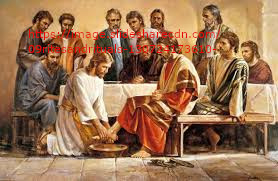
Jesus Washes the Feet of His Disciples
Now before the feast of the Passover, Jesus, knowing that his time had come that he would depart from this world to the Father, having loved his own who were in the world, he loved them to the end.During supper, the devil having already put into the heart of Judas Iscariot, Simon’s son, to betray him,Jesus, knowing that the Father had given all things into his hands, and that he came from God, and was going to God,arose from supper, and laid aside his outer garments. He took a towel, and wrapped a towel around his waist.Then he poured water into the basin, and began to wash the disciples’ feet, and to wipe them with the towel that was wrapped around him.Then he came to Simon Peter. He said to him, “Lord, do you wash my feet?”Jesus answered him, “You don’t know what I am doing now, but you will understand later.” Peter said to him, “You will never wash my feet!” Jesus answered him, “If I don’t wash you, you have no part with me.” Simon Peter said to him, “Lord, not my feet only, but also my hands and my head!”Jesus said to him, “Someone who has bathed only needs to have his feet washed, but is completely clean. You are clean, but not all of you.” For he knew him who would betray him, therefore he said, “You are not all clean.”So when he had washed their feet, put his outer garment back on, and sat down again, he said to them, “Do you know what I have done to you? You call me, ‘Teacher’ and ‘Lord.’ You say so correctly, for so I am. If I then, the Lord and the Teacher, have washed your feet, you also ought to wash one another’s feet. For I have given you an example, that you also should do as I have done to you. Most certainly I tell you, a servant is not greater than his lord, neither one who is sent greater than he who sent him. If you know these things, blessed are you if you do them. I don’t speak concerning all of you. I know whom I have chosen. But that the Scripture may be fulfilled, ‘He who eats bread with me has lifted up his heel against me.’From now on, I tell you before it happens, that when it happens, you may believe that I am he. Most certainly I tell you, he who receives whomever I send, receives me; and he who receives me, receives him who sent me.” (John 13:1-20 WEB)
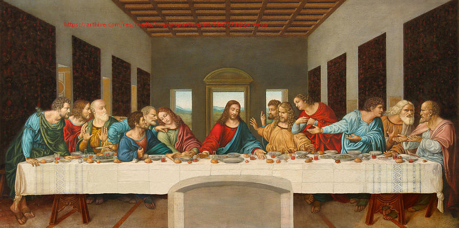
Last Supper
Now on the first day of unleavened bread, the disciples came to Jesus, saying to him, “Where do you want us to prepare for you to eat the Passover?” He said, “Go into the city to a certain person, and tell him, ‘The Teacher says, “My time is at hand. I will keep the Passover at your house with my disciples.”’” The disciples did as Jesus commanded them, and they prepared the Passover.Now when evening had come, he was reclining at the table with the twelve disciples.As they were eating, he said, “Most certainly I tell you that one of you will betray me.” They were exceedingly sorrowful, and each began to ask him, “It isn’t me, is it, Lord?”He answered, “He who dipped his hand with me in the dish, the same will betray me. The Son of Man goes, even as it is written of him, but woe to that man through whom the Son of Man is betrayed! It would be better for that man if he had not been born.” Judas, who betrayed him, answered, “It isn’t me, is it, Rabbi?” He said to him, “You said it.” As they were eating, Jesus took bread, gave thanks for [TR reads “blessed” instead of “gave thanks for”] it, and broke it. He gave to the disciples, and said, “Take, eat; this is my body.”He took the cup, gave thanks, and gave to them, saying, “All of you drink it, for this is my blood of the new covenant, which is poured out for many for the remission of sins. But I tell you that I will not drink of this fruit of the vine from now on, until that day when I drink it anew with you in my Father’s Kingdom.” When they had sung a hymn, they went out to the Mount of Olives.(Matthew 26:17-30 WEB)
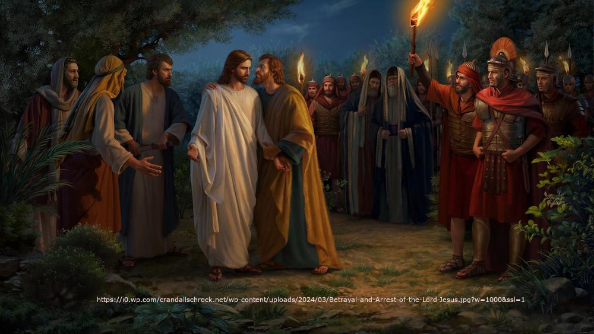
Jesus Arrested
While he was still speaking, behold, Judas, one of the twelve, came, and with him a great multitude with swords and clubs, from the chief priests and elders of the people.Now he who betrayed him gave them a sign, saying, “Whoever I kiss, he is the one. Seize him.”Immediately he came to Jesus, and said, “Hail, Rabbi!” and kissed him.Jesus said to him, “Friend, why are you here?” Then they came and laid hands on Jesus, and took him.Behold, one of those who were with Jesus stretched out his hand, and drew his sword, and struck the servant of the high priest, and struck off his ear.Then Jesus said to him, “Put your sword back into its place, for all those who take the sword will die by the sword. Or do you think that I couldn’t ask my Father, and he would even now send me more than twelve legions of angels? How then would the Scriptures be fulfilled that it must be so?” In that hour Jesus said to the multitudes, “Have you come out as against a robber with swords and clubs to seize me? I sat daily in the temple teaching, and you didn’t arrest me. But all this has happened, that the Scriptures of the prophets might be fulfilled.” Then all the disciples left him, and fled.(Matthew 26:47-56 WEB)
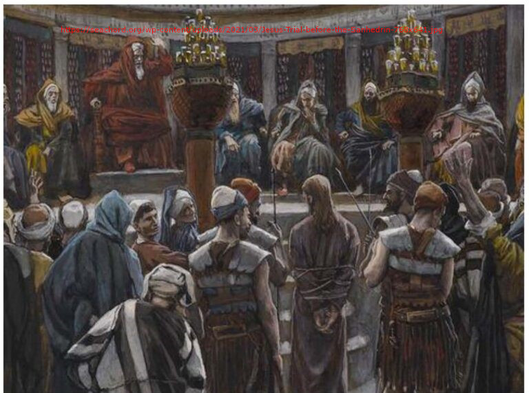
Jesus on Trial
Now Jesus stood before the governor: and the governor asked him, saying, “Are you the King of the Jews?” Jesus said to him, “So you say.” When he was accused by the chief priests and elders, he answered nothing.Then Pilate said to him, “Don’t you hear how many things they testify against you?”He gave him no answer, not even one word, so that the governor marveled greatly.Now at the feast the governor was accustomed to release to the multitude one prisoner, whom they desired.They had then a notable prisoner, called Barabbas.When therefore they were gathered together, Pilate said to them, “Whom do you want me to release to you? Barabbas, or Jesus, who is called Christ?”For he knew that because of envy they had delivered him up.While he was sitting on the judgment seat, his wife sent to him, saying, “Have nothing to do with that righteous man, for I have suffered many things today in a dream because of him.”Now the chief priests and the elders persuaded the multitudes to ask for Barabbas, and destroy Jesus.But the governor answered them, “Which of the two do you want me to release to you?” They said, “Barabbas!” Pilate said to them, “What then shall I do to Jesus, who is called Christ?” They all said to him, “Let him be crucified!” But the governor said, “Why? What evil has he done?” But they cried out exceedingly, saying, “Let him be crucified!”So when Pilate saw that nothing was being gained, but rather that a disturbance was starting, he took water, and washed his hands before the multitude, saying, “I am innocent of the blood of this righteous person. You see to it.”All the people answered, “May his blood be on us, and on our children!”Then he released to them Barabbas, but Jesus he flogged and delivered to be crucified.(Matthew 27:11-26 WEB)
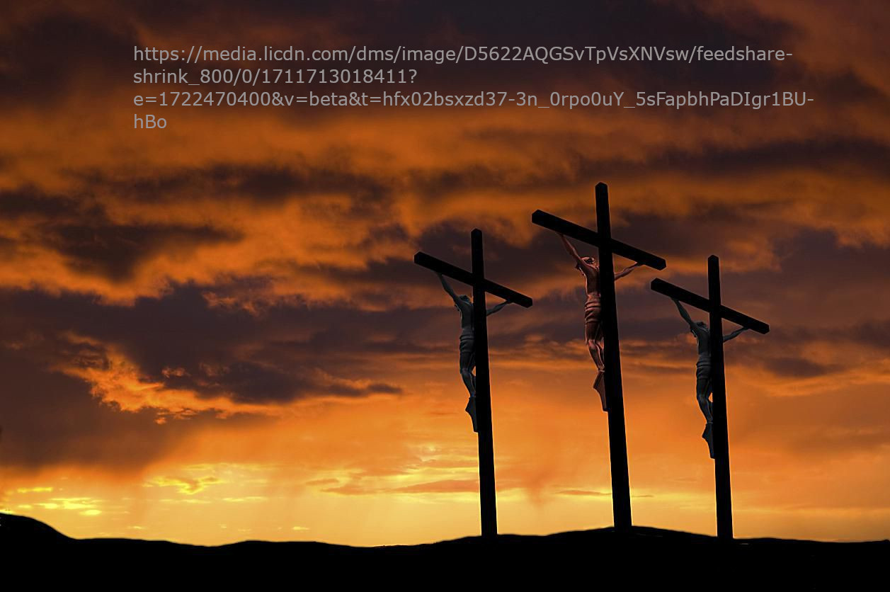
The Crucifixion of Jesus
As they came out, they found a man of Cyrene, Simon by name, and they compelled him to go with them, that he might carry his cross.When they came to a place called “Golgotha”, that is to say, “The place of a skull,”they gave him sour wine [or, vinegar] to drink mixed with gall. When he had tasted it, he would not drink.When they had crucified him, they divided his clothing among them, casting lots, [TR adds “that it might be fulfilled which was spoken by the prophet: ‘They divided my garments among them, and for my clothing they cast lots;’” [see Psalm 22:18 and John 19:24]] and they sat and watched him there.They set up over his head the accusation against him written, “THIS IS JESUS, THE KING OF THE JEWS.”Then there were two robbers crucified with him, one on his right hand and one on the left.Those who passed by blasphemed him, wagging their heads,and saying, “You who destroy the temple, and build it in three days, save yourself! If you are the Son of God, come down from the cross!” Likewise the chief priests also mocking, with the scribes, the Pharisees, [TR omits “the Pharisees”] and the elders, said,“He saved others, but he can’t save himself. If he is the King of Israel, let him come down from the cross now, and we will believe in him.He trusts in God. Let God deliver him now, if he wants him; for he said, ‘I am the Son of God.’”The robbers also who were crucified with him cast on him the same reproach.Now from the sixth hour [noon] there was darkness over all the land until the ninth hour. [3:00 p.m.] About the ninth hour Jesus cried with a loud voice, saying, “Eli, Eli, lima [TR reads “lama” instead of “lima”] sabachthani?” That is, “My God, my God, why have you forsaken me?” Some of them who stood there, when they heard it, said, “This man is calling Elijah.”Immediately one of them ran, and took a sponge, and filled it with vinegar, and put it on a reed, and gave him a drink.The rest said, “Let him be. Let’s see whether Elijah comes to save him.”Jesus cried again with a loud voice, and yielded up his spirit.Behold, the veil of the temple was torn in two from the top to the bottom. The earth quaked and the rocks were split.The tombs were opened, and many bodies of the saints who had fallen asleep were raised;and coming out of the tombs after his resurrection, they entered into the holy city and appeared to many.Now the centurion, and those who were with him watching Jesus, when they saw the earthquake, and the things that were done, feared exceedingly, saying, “Truly this was the Son of God.”Many women were there watching from afar, who had followed Jesus from Galilee, serving him.Among them were Mary Magdalene, Mary the mother of James and Joses, and the mother of the sons of Zebedee.(Matthew 27:32-56 WEB)
The Resurrection of Jesus
But on the first day of the week, at early dawn, they and some others came to the tomb, bringing the spices which they had prepared.They found the stone rolled away from the tomb.They entered in, and didn’t find the Lord Jesus’ body.While they were greatly perplexed about this, behold, two men stood by them in dazzling clothing.Becoming terrified, they bowed their faces down to the earth. They said to them, “Why do you seek the living among the dead?He isn’t here, but is risen. Remember what he told you when he was still in Galilee,saying that the Son of Man must be delivered up into the hands of sinful men, and be crucified, and the third day rise again?” They remembered his words,returned from the tomb, and told all these things to the eleven, and to all the rest.Now they were Mary Magdalene, Joanna, and Mary the mother of James. The other women with them told these things to the apostles.These words seemed to them to be nonsense, and they didn’t believe them.But Peter got up and ran to the tomb. Stooping and looking in, he saw the strips of linen lying by themselves, and he departed to his home, wondering what had happened. (Luke 24:1-12 WEB)
Ascension of Jesus into heaven
Therefore when they had come together, they asked him, “Lord, are you now restoring the kingdom to Israel?”He said to them, “It isn’t for you to know times or seasons which the Father has set within his own authority. But you will receive power when the Holy Spirit has come upon you. You will be witnesses to me in Jerusalem, in all Judea and Samaria, and to the uttermost parts of the earth.”When he had said these things, as they were looking, he was taken up, and a cloud received him out of their sight.While they were looking steadfastly into the sky as he went, behold, [“Behold”, from “ἰδοὺ”, means look at, take notice, observe, see, or gaze at. It is often used as an interjection.] two men stood by them in white clothing,who also said, “You men of Galilee, why do you stand looking into the sky? This Jesus, who was received up from you into the sky, will come back in the same way as you saw him going into the sky.”(Acts 1:6-11 WEB)